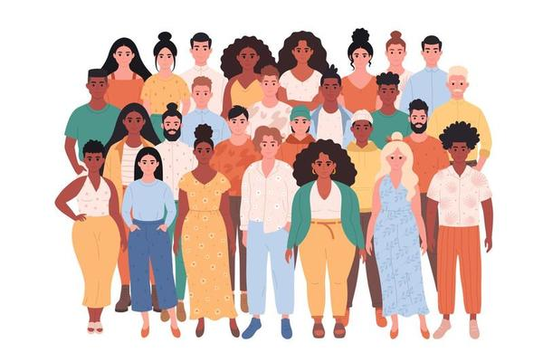

Bem vindo ao Women's Forum
Todos Contra o Feminicidio
"Se alguém disser que ninguém vai acreditar em você, faça o teste! Não se cale diante da violência!"
Denuncie!

"Se alguém disser que ninguém vai acreditar em você, faça o teste! Não se cale diante da violência!"
Denuncie!
Mais do que um local seguro, a Casa Abrigo é um lugar de recomeço. De lá, as mulheres podem buscar uma nova vida, com mais oportunidades e sem violência. A Casa Abrigo é um espaço de garantia de defesa e proteção de mulheres vítimas de violência doméstica, familiar e sexual, em risco de morte, e de seus dependentes. A unidade oferece atendimento psicológico, jurídico, pedagógico e de assistência social.
O ingresso no espaço é feito por meio de encaminhamento da Delegacia Especializada no Atendimento à Mulher (DEAM), demais delegacias, pela Casa da Mulher Brasileira ou por ordem judicial. As mulheres podem ir acompanhadas de seus filhos ou dependentes. Do sexo masculino, até doze anos de idade incompletos, e do sexo feminino, sem limitação de idade. Durante o período na Casa, as mulheres e seus dependentes recebem cuidados na área da saúde, orientações para o retorno ao mercado de trabalho e direcionamento escolar, a depender das necessidades de cada caso.